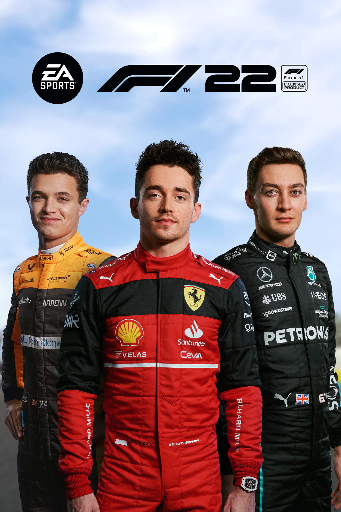

Formula 1
Az F1 22 a Codemasters által fejlesztett és az EA Sports által kiadott versenyzős videójáték. Ez a Codemasters F1-sorozatának tizenharmadik darabja. A játék a 2022-es Formula-1 és Formula-2 bajnokság hivatalos licencével rendelkezik.
- A Formula 1 2023 készítése folyamatba van
- Formula 1 versenyzőivel és autóival lehet versenyezni
Minden jog fenntartva!